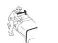
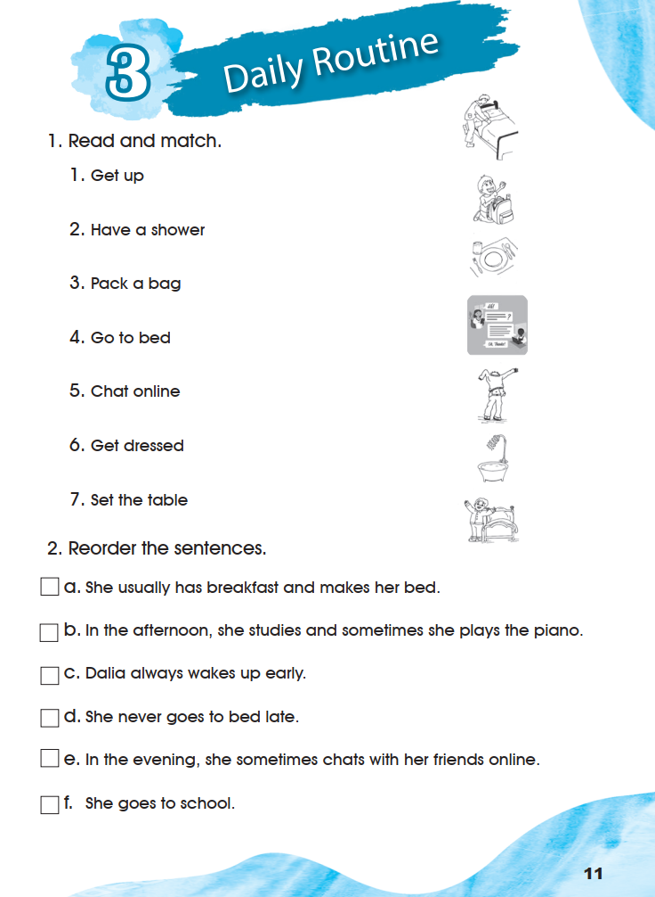
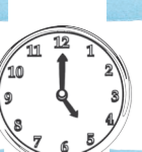
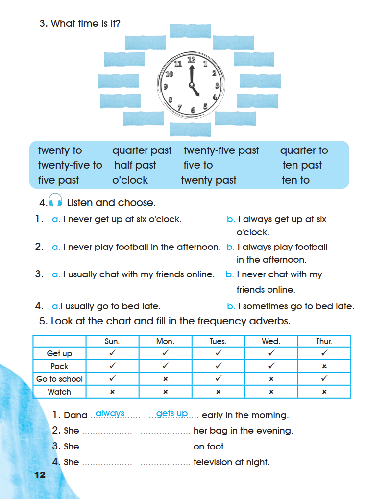
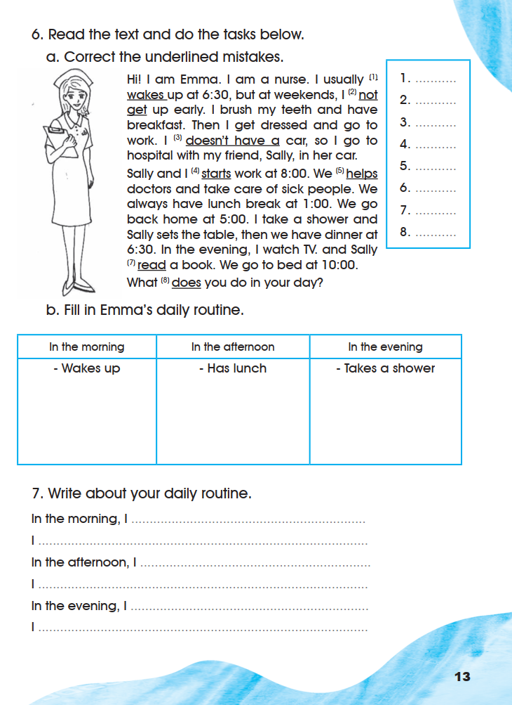

Workbook — Daily Routine
Exercises 1–7 appear in their original order, on the pages where the book prints them. The listening exercise keeps its printed instructions and choices and is marked as audio-dependent.
1. Read and match.
The book prints the seven routine verbs in a numbered list and seven small drawings in a column beside them. Each drawing is shown below, lettered A–G in the order it is printed down the page, beside the verb it corresponds to. Choose the letter of the drawing that shows each verb.

0 of 7 chosen. Your choices are kept on this page.
- Get up → G (a child standing up beside the made bed, arm raised)
- Have a shower → F (the shower head running into the bath)
- Pack a bag → B (the child kneeling at the open school bag)
- Go to bed → A (a person turning back the bedcovers)
- Chat online → D (the phone screen with a chat)
- Get dressed → E (a person pulling a shirt over their head)
- Set the table → C (the plate, cutlery and glass)
Each match follows the drawing printed beside the verb list. The book prints no key for exercise 1. The two bed drawings are the ones to compare carefully: A is the person still at the bed, turning the covers back, which is Go to bed; G is the child already up and standing beside the made bed, which is Get up.
Open the source page · Workbook · p. 11
This is the original supplied image, shown without redrawing or generation.

2. Reorder the sentences.
The six sentences are printed in the wrong order. Write a number from 1 to 6 in the box beside each one to put Dalia’s day in order.
- a
She usually has breakfast and makes her bed.
- b
In the afternoon, she studies and sometimes she plays the piano.
- c
Dalia always wakes up early.
- d
She never goes to bed late.
- e
In the evening, she sometimes chats with her friends online.
- f
She goes to school.
- 1 — c. Dalia always wakes up early.
- 2 — a. She usually has breakfast and makes her bed.
- 3 — f. She goes to school.
- 4 — b. In the afternoon, she studies and sometimes she plays the piano.
- 5 — e. In the evening, she sometimes chats with her friends online.
- 6 — d. She never goes to bed late.
The order follows the day itself: waking, breakfast, school, afternoon, evening, bed. Two sentences carry their own time phrase (“In the afternoon …”, “In the evening …”), which fixes their place, and only one sentence can come first. The book prints no key for exercise 2.
3. What time is it?
The book prints one clock face with twelve empty blue labels around it and a word bank of twelve time expressions below. The labels are blank in the book: their printed position around the dial is the twelve positions of a clock face, and nothing is printed inside any label. Write one expression from the bank into each label, beside the hour it describes.

The clock shows twenty-five to five: the minute hand points at twelve and the hour hand points between four and five.
Write one expression from the bank into each of the twelve printed labels. The book prints no number inside any label, and the labels are laid out as brush strokes around the dial rather than on exact hour marks, so the twelve boxes below are simply numbered 1–12 in the order the labels run clockwise from the top of the dial. Read your copy of the page and put each expression where it belongs on the dial.
0 of 12 written.
The bank holds exactly twelve expressions, one for each printed label. Read in the order it is printed:
- twenty to
- quarter past
- twenty-five past
- quarter to
- twenty-five to
- half past
- five to
- ten past
- five past
- o’clock
- twenty past
- ten to
Each expression names one position on a clock face: the hour itself takes o’clock, the positions after the hour take a past form and the positions before the next hour take a to form. The clock hands are printed with the minute hand at twelve and the hour hand between four and five, so the time the drawing shows is twenty-five to five.
What the scan does settle and what it does not. The twelve blue labels are blank in the printed book — nothing is printed inside any of them — and the hands are clear. What the scan does not settle is which label sits beside which hour, because the labels are brush strokes placed roughly around the dial rather than on exact hour marks. This page therefore does not publish a label-by-label key: it gives you the twelve printed expressions, states the time the hands show, and leaves the placement to the pupil and the teacher. The book prints no key for exercise 3.
Open the source page · Workbook · p. 12
This is the original supplied image, shown without redrawing or generation.

4. Listen and choose.
0 of 4 chosen. Your choices are kept on this page.
No printed answer. This is a listen-and-choose task: the sentence to choose depends on the recording, which was not supplied, and the book prints no key. The four items and all eight sentences are reproduced exactly as printed.
5. Look at the chart and fill in the frequency adverbs.
The chart shows four actions across five school days. A tick (✓) is a day Dana did the action and a cross (✕) is a day she did not. Use the pattern of ticks to choose the frequency adverb, then write the verb that completes the sentence.
| Action | Sun. | Mon. | Tues. | Wed. | Thur. |
|---|---|---|---|---|---|
| Get up | ✓ | ✓ | ✓ | ✓ | ✓ |
| Pack | ✓ | ✓ | ✓ | ✓ | ✕ |
| Go to school | ✓ | ✕ | ✓ | ✕ | ✓ |
| Watch | ✕ | ✕ | ✕ | ✕ | ✕ |
Printed example: 1. Dana always gets up early in the morning. The two words in the blue boxes are printed in the book.
- 2
She her bag in the evening.
- 3
She on foot.
- 4
She television at night.
The adverb comes from the row whose five marks match the printed sentence. The verb after the gap has to agree with the subject, so it takes -s because the subject is she.
- Get up: ✓ ✓ ✓ ✓ ✓ → always · gets up (printed in the book as the example)
- Pack: ✓ ✓ ✓ ✓ ✕ → usually · packs
- Go to school: ✓ ✕ ✓ ✕ ✓ → sometimes · goes (go + es)
- Watch: ✕ ✕ ✕ ✕ ✕ → never · watches (watch + es)
The adverbs follow directly from the printed chart. The verb forms follow the Let’s Learn rule on Pupil’s Book page 11. The book prints no key for exercise 5, and this page does not mark the verbs wrong.
Open the source page · Workbook · p. 12
This is the original supplied image, shown without redrawing or generation.
6. Read the text and do the tasks below.
The passage prints eight numbered underlinings. Each number marks one underlined word or phrase that contains a mistake.
Hi! I am Emma. I am a nurse. I usually (1)wakes up at 6:30, but at weekends, I (2)not get up early. I brush my teeth and have breakfast. Then I get dressed and go to work. I (3)doesn’t have a car, so I go to hospital with my friend, Sally, in her car. Sally and I (4)starts work at 8:00. We (5)helps doctors and take care of sick people. We always have lunch break at 1:00. We go back home at 5:00. I take a shower and Sally sets the table, then we have dinner at 6:30. In the evening, I watch TV and Sally (7)read a book. We go to bed at 10:00. What (8)does you do in your day?
Printed exactly as in the book. Eight underlinings carry a printed number, but the numbers in the scan run (1) (2) (3) (4) (5) (7) (8): no number (6) is printed anywhere in the passage. The box in the right-hand margin is numbered 1 to 8, so there are eight answer lines for eight numbered underlinings, and the seventh and eighth underlinings carry the numbers (7) and (8). This page keeps that numbering untouched: it does not renumber anything and it does not invent a sixth mark. The eighth numbered underlining is the word does in the final question.
a. Correct the underlined mistakes.
Write the correct form for each numbered underlining. The number in each box is the number printed in the passage beside that underlining.
- 1
Printed: I usually wakes up at 6:30
- 2
Printed: at weekends, I not get up early
- 3
Printed: I doesn’t have a car
- 4
Printed: Sally and I starts work at 8:00
- 5
Printed: We helps doctors
- 7
Printed: Sally read a book — this underlining carries the printed number (7)
- 8
Printed: What does you do in your day? — this underlining carries the printed number (8)
The book prints eight numbered underlinings but no number (6), and its margin box has eight lines. Seven numbered underlinings can be seen in the scan: (1), (2), (3), (4), (5), (7) and (8). The sixth answer line corresponds to the missing printed number (6); no word has been assigned to it here, because no such word is visible in the supplied scan and nothing is invented to fill the gap.
- (1) wakes → wake (I wake)
- (2) not get → don’t get (a negative needs the helping verb)
- (3) doesn’t have a → don’t have a (I don’t have)
- (4) starts → start (Sally and I = we, so no -s)
- (5) helps → help (we help)
- (7) read → reads (Sally = she, so the verb takes -s)
- (8) does → do (What do you do …?)
All seven corrections follow the Let’s Learn box on Pupil’s Book page 11. The missing printed number (6) is left unanswered rather than guessed, for the reason given above. The book prints no key for exercise 6.
b. Fill in Emma’s daily routine.
The table prints one item in each column as a starting example. Add the other things Emma does in each part of her day.
In the morning: wakes up at 6:30 · brushes her teeth · has breakfast · gets dressed · goes to work
In the afternoon: starts work at 8:00 with Sally · helps doctors · takes care of sick people · has lunch break at 1:00
In the evening: goes back home at 5:00 · takes a shower · Sally sets the table · has dinner at 6:30 · watches TV · Sally reads a book · goes to bed at 10:00
Every item is stated in the printed passage. The book prints no key for exercise 6b, and your own wording is accepted.
7. Write about your daily routine.
The book prints six starting phrases. Finish each one with true information about your own day. The three time-of-day phrases and the three plain “I …” lines alternate exactly as the book prints them.
Personal writing. Any true sentences about your own routine are correct, so no single answer is supplied and nothing is marked wrong.
Open the source page · Workbook · p. 13
This is the original supplied image, shown without redrawing or generation.
